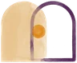
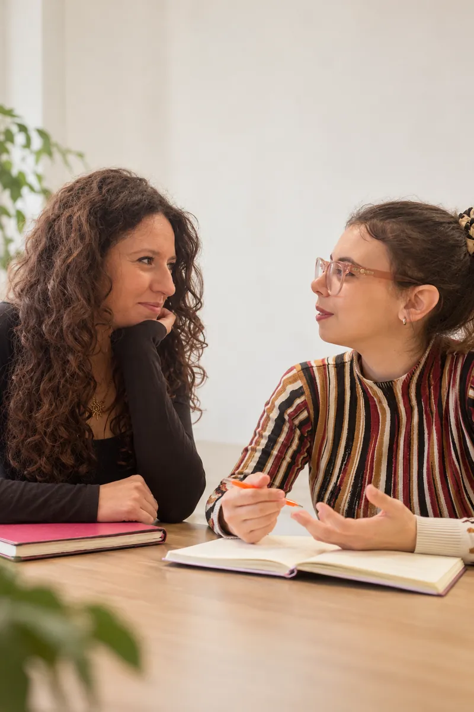
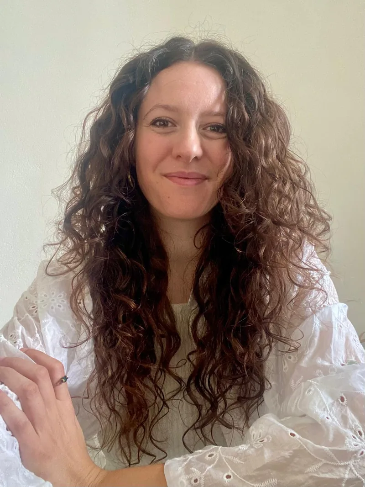

Dott.ssa Valentina Allieri
Psicologa, specializzanda in psicoterapia sistemico-relazionale. Riceve bambini, adolescenti, adulti, coppie, genitori e famiglie.
Il profilo →
Allieri & Pagliari PsicologheDue professioniste indipendenti che condividono lo studio e uno sguardo sistemico-relazionale. Conosci i nostri percorsi e scegli a chi rivolgerti.

Allieri & Pagliari
Condividiamo lo studio e il confronto professionale. Ciascuna mantiene la propria attività clinica, il proprio stile e le proprie aree di interesse.
Conosciamoci meglio →Il nostro modo di lavorare
Il nostro approccio sistemico-relazionale considera la persona nelle sue relazioni, nelle esperienze vissute e nei contesti che attraversa.
Insieme, diamo significato a ciò che sta accadendo e riconosciamo risorse e possibilità di cambiamento.
Come si svolge il primo colloquio →Possiamo lavorare insieme su
Chi siamo
Psicologa, specializzanda in psicoterapia sistemico-relazionale. Riceve bambini, adolescenti, adulti, coppie, genitori e famiglie.
Il profilo →
Psicologa clinica, specializzanda in psicoterapia sistemico-relazionale. Riceve adolescenti, adulti e coppie.
Il profilo →Prendiamo contatto
Se non sai a chi rivolgerti, consulta la nostra guida per orientarti tra le professioniste.
Guida: a chi rivolgerti → Hai qualche dubbio? Leggi le domande frequenti →
Riceviamo a Roncello
e anche online.